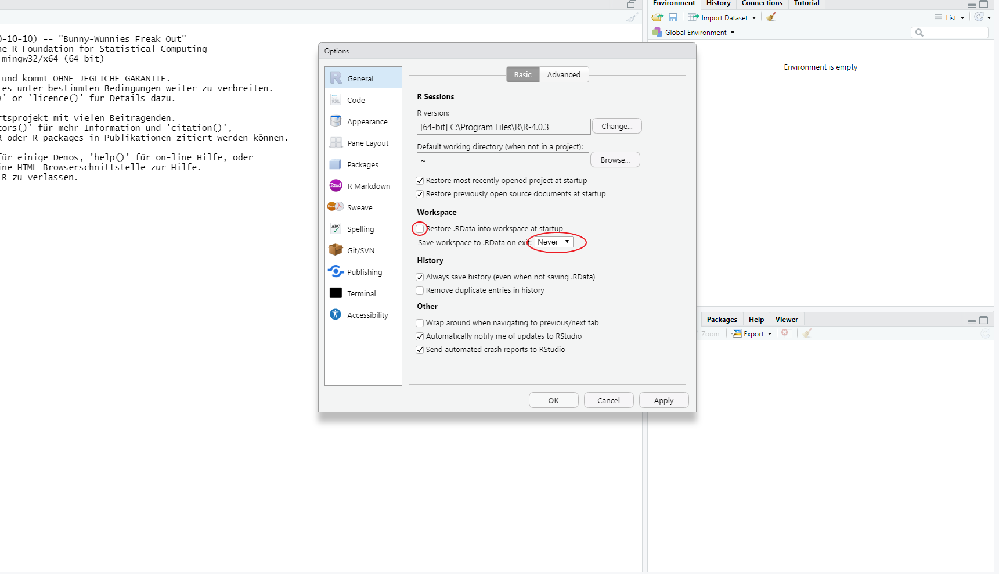
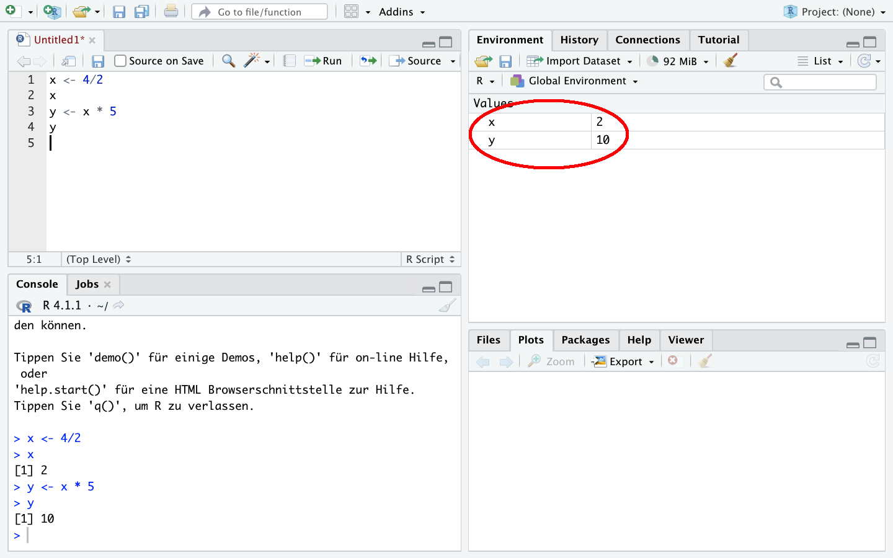

2+5[1] 73-4[1] -15*6[1] 307/8[1] 0.875Bei R handelt es sich um ein vollständig kostenloses Programm, das Sie unter CRAN herunterladen können. Ebenfalls kostenlos ist die Erweiterung RStudio, die Sie unter hier herunterladen können. RStudio erweitert R um eine deutlich informativere und ansprechendere Oberfläche, Hilfe und Auto-Vervollständigung beim Schreiben von Syntax und insgesamt eine verbesserte Nutzeroberfläche. Jedoch ist RStudio eine Erweiterung von R, sodass Sie beide Programme benötigen.
Installieren Sie zuerst R und dann RStudio, dann erkennt RStudio die installierte R-Version und die beiden Programme verbinden sich in der Regel automatisch. R ist dabei sozusagen der Motor, RStudio unser Cockpit. Wir könnten direkt mit R arbeiten, aber mit RStudio haben wir eine komfortablere Option und einen besseren Überblick.

Öffnen Sie nach erfolgreicher Installation die Anwendung RStudio und Sie sollten folgende Ansicht vor sich sehen:

Um Probleme bei der künftigen Arbeit mit R zu vermeiden, deaktivieren Sie bitte das automatische Speichern und Laden des Workspace. Rufen Sie dazu das entsprechende Menü unter dem Reiter “Tools -> Global options” auf und deaktivieren Sie bitte “Restore .RData into workspace at startup” und setzen Sie “Save workspace to .RData on exit:” auf Never. RStudio speichert ansonsten alle geladenen Objekte wenn Sie die Sitzung beenden und lädt diese automatisch wenn Sie das Programm das nächste Mal öffnen. Dies führt erfahrungsgemäß zu Problemen.

Bestätigen Sie die Einstellungen mit “Apply” und schließen Sie das Fenster mit “OK”.
Nach diesen grundlegenden Einstellungen können wir uns an die ersten Schritte in R machen. Öffnen Sie dazu zunächst ein Script, indem Sie auf das weiße Symbol links oben klicken oder drücken Sie gleichzeitig STRG/Command + Shift + N .
Es öffnet sich ein viertes Fenster, sodass Sie nun folgende Ansicht vor sich haben sollten:

Dieser Scripteditor ist der Ort, an dem wir Befehle erstellen und anschließend durchführen werden. Der Scripteditor dient dabei als Sammlung aller durchzuführenden Befehle. Wir können diese Sammlungen speichern, um sie später wieder aufzurufen und vor allem können wir so Befehlssammlungen mit anderen teilen oder Skripte von anderen für uns selbst nutzen. Wir entwerfen also zunächst im Scripteditor eine Rechnung:
Um diese nun auszuführen, klicken wir in die auszuführende Zeile, sodass der Cursor in dieser Zeile ist und drücken gleichzeitig STRG und Enter (Mac-User Command und Enter):


R gibt die Ergebnisse unten in der Console aus:

Das funktioniert auch für mehrere Rechnungen auf einmal indem wir mehrere Zeilen markieren und dann wieder STRG und Enter (Mac-User Command und Enter) drücken:

Eingaben aus dem Script-Editor und Ergebnisse aus der Konsole werden in Zukunft so dargestellt:
2+5[1] 73-4[1] -15*6[1] 307/8[1] 0.875R beherrscht natürlich auch längere Berechnungen, zum Beispiel wird auch Punkt vor Strich beachtet:
2+3*2[1] 8(2+3)*2[1] 10Auch weitere Operationen sind möglich:
4^2 ## 4²
sqrt(4) ## Wurzel
exp(1) ## Exponentialfunktion (Eulersche Zahl)
log(5) ## Natürlicher Logarithmus
log(exp(5)) ## log und exp heben sich gegenseitig aufZahlenreihen können wir mit seq() oder : erstellen:
2:6[1] 2 3 4 5 6seq(2,11,3)[1] 2 5 8 11Bisher haben wir uns unsere Berechnungen immer direkt ausgeben lassen. Für umfangreichere Berechnungen - wir wollen ja ab dem nächsten Kapitel mit Datensätzen arbeiten - wollen wir aber die Zwischenschritte speichern.
Ergebnisse lassen sich mit einem <- unter einem beliebigen Namen als Objekt speichern. Dann wird R uns nicht das Ergebnis anzeigen, sondern den Befehl in der Konsole wiederholen:
x <- 4/2Im Fenster “Environment” rechts oben sehen wir jetzt das abgelegte Objekt x:
Wir können es später wieder aufrufen:
x[1] 2Außerdem können wir Objekte in Rechnungen weiter verwenden - wir setzen einfach x ein und erstellen zB. y:
y <- x * 5
y[1] 10
Mit c() lassen sich mehrere Werte unter einem Objekt ablegen und auch mit diesen lässt sich rechnen:
x1 <- c(1,2,3)
x1[1] 1 2 3x1* 2[1] 2 4 6Mit length() können wir die Anzahl der abgelegten Werte nachsehen:
length(x1)[1] 3y1 <- c(10,11,9)
y1[1] 10 11 9y1/x1[1] 10.0 5.5 3.0Natürlich können wir Objekte auch wieder löschen und zwar mit rm(). Wenn wir ein nicht existierendes Objekt aufrufen bekommen wir eine Fehlermeldung:
rm(x1)
x1Error in eval(expr, envir, enclos): Objekt 'x1' nicht gefundenMit rm(list = ls()) können alle Objekte aus dem Environment gelöscht werden.
Das Script können wir speichern, um es später wieder aufzurufen.
Wichtig ist dabei, der gespeicherten Datei die Endung “.R” zu geben, also zum Beispiel “01_Script.R”.
Neben den eigentlichen Befehlen sind Kommentare ein zentraler Bestandteil einer Datenanalyse-Syntax. Nur so können künftige Nutzende (insbesondere wir selbst in 3 Wochen oder 2 Jahren) nachvollziehen was passiert. Kommentare in R können mit # eingefügt werden:
2+ 5 # hier steht ein Kommentar[1] 72+ # auch hier kann ein Kommentar stehen
5[1] 7( 2 + # ein
3) * # kommentar
2 # über mehrere Zeilen[1] 10Tipp: Erstellen Sie sich am besten sofort einen Ordner, in dem Sie alle R Scripte und Datensätze aus dieser Veranstaltung gesammelt ablegen.
# Überschrift 1 ----
## Abschnit 1.1 ----
3+2*4
3+2*3
## Abschnit 1.2 ----
3+2*sqrt(3)
# Überschrift 2 ----
x <- c(2,6,8,2,35)
y <- seq(2,10,2)
y/x
stud ab.prof ab.stud und prof verwenden.studprof ab und rufen Sie das das Objekt noch einmal auf!studs ab.profs ab.studs und profs ablegen. Wie gehen Sie vor?stud. Woran erkennen Sie, dass das funktioniert hat?